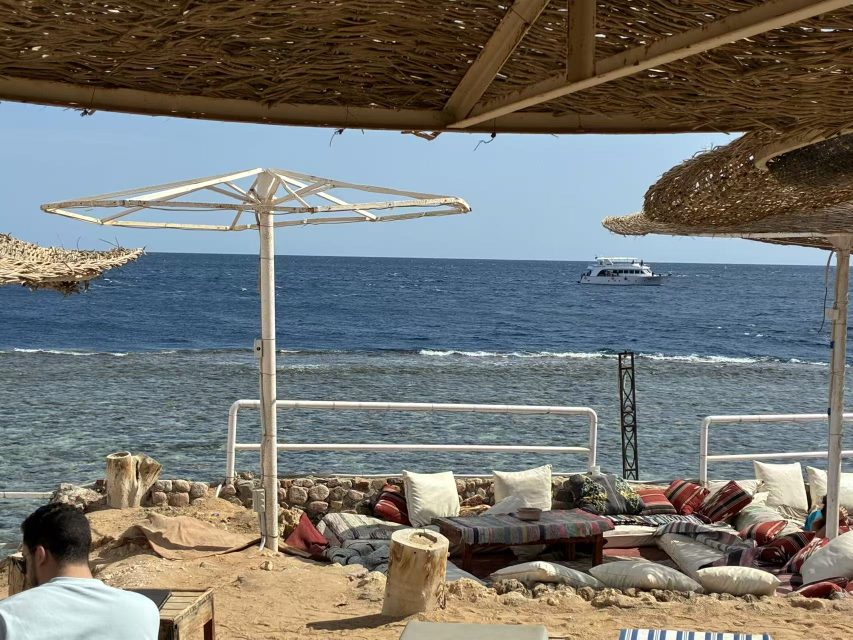

圣地亚哥的老陈夫妇在后厨站了二十二年。2026 年春天，他们第一次合上店门，去了一趟埃及。不是因为退休，而是因为灶台前换了一个不会发脾气、也不会辞职的"厨师"。
圣地亚哥 Convoy 街往北开十分钟，有一片华人商圈。停车场的格局跟国内二线城市的老商场差不多——瓷砖墙掉过一块，标牌是中英双语的，熟悉的店家名字挤成一排：牙科、律师楼、按摩足疗、旅行社，以及「蜀府家宴」。
店不大，十几张桌子，门口玻璃上贴着褪色的红字。1999 年老陈从成都过来，在别人店里做了五年二厨。2004 年和太太林姐凑出首付盘下这家馆子，一开就是二十二年。在北美华人餐饮圈里，这是一个再普通不过的故事——只是它也和所有这样的故事一样，包了太多琐碎的凌晨和争执。
"做这一行，你最先丢掉的是时间。"
林姐说这话的时候，是在店里的后厨，围裙上还沾着早上的辣椒油。他们以前的作息是这样的：老陈五点多起，五点半到店，先熬汤、吊高汤，再腌肉、焯菜；林姐七点出头到，对当天的预订、收拾冰柜。午市从十一点半开到一点半。下午两点到四点是一天里唯一的缝隙，林姐会趁这个时间开车去 99 大华补点货，给在波士顿工作的女儿打个电话，或者坐在吧台后面的高脚凳上，在手机上翻几条微信、看一眼《世界日报》的本地版。晚市五点到九点半，关店后洗厨房、盘账，回到家常常十一点。
"那时候没觉得苦，"林姐说，"就是累，不一样。"
真正让人喘不过气的，是厨师。
"湾区、纽约那些大馆子能给到八千、九千的月薪，还包吃住。我们这种社区店给到六千已经算实诚，师傅还不一定留得住。"老陈说，他这二十二年里合作过的主厨——记不清了，二十几个总有。有做了三个月的，为一次分灶口角摔了锅铲；有在中秋忙市那晚突然收拾行李去拉斯维加斯赌场餐厅打工；还有一个做了七年的老搭档，关系最好的，某天吃完员工饭对他说："老板，我累了。"第二天没来。
那几次过渡期，林姐自己上过灶。她个子不高，颠一下十六寸的铁锅，一天下来手臂都抬不起来。
"我们总说，再撑一年、再撑一年。女儿都结婚了，我们还在撑。"
老陈第一次听说 Panshaker X7，是 2025 年底。
介绍人是 LA 的一个老乡，做便当连锁的，生意比他大，早两年上了机器。老乡在微信上说："这东西不是来抢你饭碗的，是来帮你把厨师荒止住。"老陈半信半疑，犹豫了大半年。直到 2026 年 3 月，店里第五任主厨在一次盘货分歧中撂挑子不干了——这一次他和林姐自己顶了十天后厨。那十天结束，他对林姐说："我们试试。"
机器装进店的那天是个周二上午。Panshaker 派来的工程师姓王，在后厨里和林姐用四川话聊了一上午，把蜀府最稳的二十来道菜——回锅肉、麻婆豆腐、鱼香肉丝、水煮牛、宫保鸡丁、蒜泥白肉、糖醋里脊、姜汁热窝鸡——一道一道拿去调参数。老陈坐在吧台那边抽完了半包烟。
第一道出锅的是回锅肉。他端起一块，沾点汤水放进嘴里，嚼了三秒，没说话。林姐问他怎么样。他说："你尝。"林姐尝完，眼圈红了："这是我们家的味道。"
在美国开中餐馆的人知道，"这是我们家的味道"是一句很重的话。因为这意味着那门在他们脑子里、舌头上、用二十二年才练出来的手艺，终于不只属于老陈一个人。
上机器之后的两个月，他们的生活是换了节奏，不是换了剧本。
闹钟从五点多改成了七点。老陈每天还是去店里——二十几年下来习惯了，老店离不开人。只是他不再自己站灶，而是在机器旁边盯出品，做最后那一步走油、调色、摆盘。切配还是他来安排，林姐依然要接订、补货、和 Yelp 上偶尔冒出来的差评打交道，晚上回家两口子还是照样对一遍当天的账。
林姐月底算账，人力成本实打实降了接近一半。但她更惦记的是另一件事：熟客不再问"今天师傅是不是换了"。以前主厨换人，总有老客敏感地尝一尝、问一句；这半年没有人问过。
5 月的一个下午，女儿从波士顿打电话，说想带他们一起去一趟埃及和英国。林姐几乎是下意识地说："算了算了，店走不开。"女儿在那头顿了顿："妈，店现在真的不需要你们天天盯着了——是你自己跟我说的。"
林姐在电话这头沉默了十几秒，说："好。"她后来跟老乡讲，那是二十二年里第一次答应得这么快。
他们是 5 月底飞开罗的。

在吉萨，老陈站了很久没说话。林姐跟女儿讲，她这辈子没见过他这样——两手插在裤兜里，对着一堆几千年的石头发了十来分钟呆。
去红海那天，他们在一家贝都因人开的海边小馆子里吃午饭。海水蓝得不像真的。林姐给国内的妹妹发了一张照片，就一句话："今天没开火。"

从埃及到伦敦。泰晤士河，大本钟，伦敦眼。老陈坚持要去大英博物馆，中国馆他们两口子逛了快三个小时。从正门出来，他在台阶上坐了一会儿，没再说什么。过了一会儿，才说了一句："那些东西，跑得比我们远。"
回到圣地亚哥是 6 月初。店照开。
厨房里那台 Panshaker X7 没什么变化，按既定的曲线在铁锅里翻着花椒和辣椒。林姐在前台收银，听见里面传出"哧啦"一声油响，和过去二十几年一模一样的声音。
"没想过退休。这辈子开馆子开惯了，退了反而不自在。只是——终于不用每天五点起床了。"
她说这话的时候是下午三点。店里进入下午的低潮时段，阳光从玻璃窗斜斜地打进来，落在收银台旁边那张女儿婚礼的照片上。老陈在机器那边，正把一小碟葱花撒进刚出锅的鱼香肉丝里。